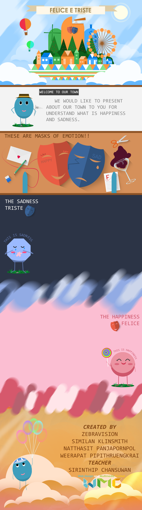
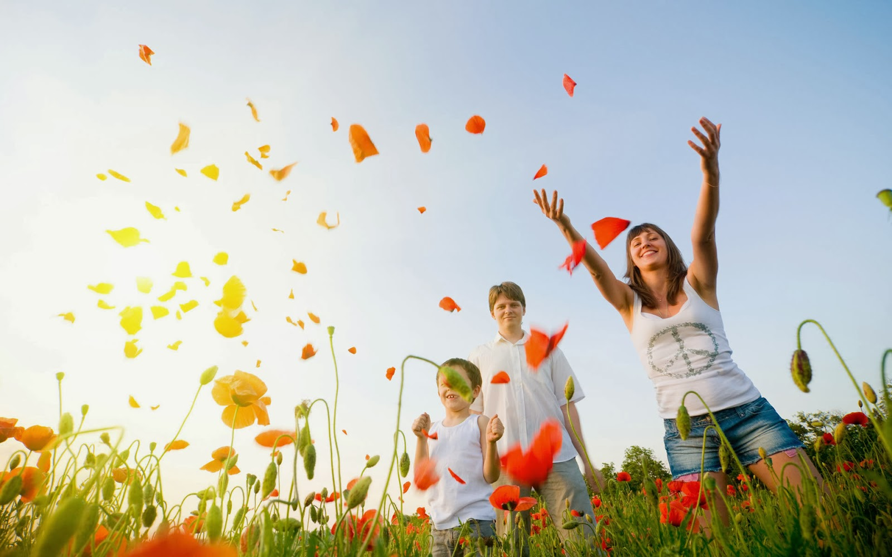
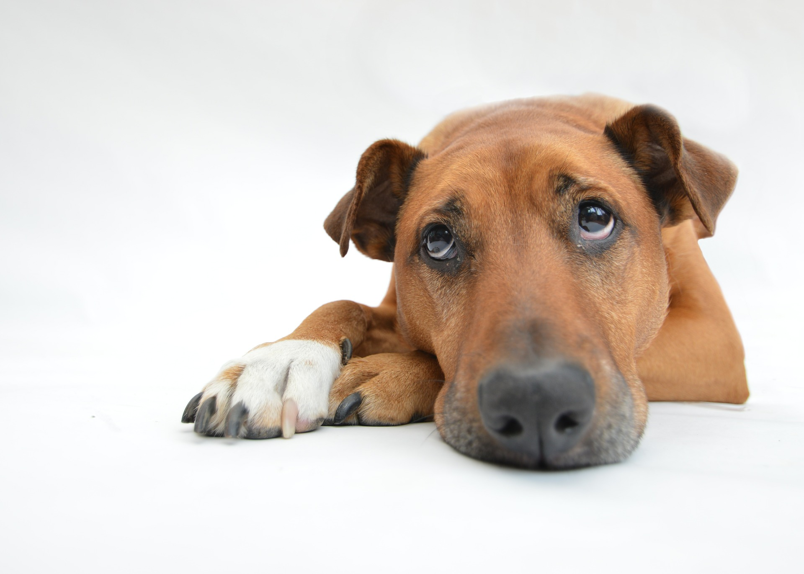

ความสุข
คือ สิ่งที่ทำให้เราคลายเครียด สบายใจ สดชื่น กำลังในการทำสิ่งต่างๆ
ความสุขนั้นมีหลายประเภท ดังต่อไปนี้
.jpg)
ความสุขนั้นมีหลายประเภท ดังต่อไปนี้
ความสุขในการท่องเที่ยว
คือ การที่เราได้ไปท่องเที่ยวในสถานที่ที่เราอยากไปกับบุคคลที่เราอยากไปด้วย เช่น ครอบครัว เพื่อน หรือคนที่เรารัก

ความสุขในการสังสรรค์
คือ การที่เราไปงานสังสรรค์และร่วมแสดงความยินดีกับคนที่เรารู้จัก เช่น งานแต่งงาน งานวันเกิด งานร่วมรุ่น

ความสุขในการทำงาน
คือ การที่เราได้ทำงานในสิ่งที่เราชอบและเราสนุกไปกับทำงาน ทำให้งานที่เราทำมีประสิทธิภาพมากขึ้น เนื่องจากเราชอบงานนั้นเราก็จะพัฒนางานให้ก้าวหน้าและกล้าที่จะทดลองสิ่งใหม่เกี่ยวกับงานนั้น

ความสุขในการเล่น
คือ การที่เราเล่นในสิ่งที่เราต้องการ ซึ่งทำให้เราเพลิดเพลินและคลายความเครียดจากการทำงาน เปรียบเสมือนการพักผ่อน เช่น การละเล่นพื้นบ้านของไทย เล่นวีดีโอเกม การวาดรูป

ความสุขในงานอดิเรกของตนเอง
คือ การที่เราได้ทำในสิ่งที่เราชอบเป็นการผ่อนคลายและพัฒนาฝีมือของตนเองเพื่อนำไปใช้ในชีวิตประจำวัน อาจจะเป็นอาชีพเสริม เช่น การเล่นดนตรี การแต่งนิยาย การทำอาหาร
.jpg)
ความโศกเศร้า
คือ สิ่งที่ทำให้เราเครียด ไม่สบายใจ หดหู่ หมดกำลังในการทำสิ่งต่างๆ
ความโศกเศร้านั้นมีหลายประเภท ดังต่อไปนี้
ความโศกเศร้านั้นมีหลายประเภท ดังต่อไปนี้
ความโดดเดี่ยว
คือ การที่เราอยู่คนเดียวจนทำให้เกิดความฟุ้งซ่านไปต่างๆนานา แล้วไม่มีใครมาอยู่เคียงข้างเราเลย เช่น คนที่โดนเพื่อนในกลุ่มเมิน คนที่น้อยใจชีวิตจนต้องไปอยู่คนเดียว
ความกลุ้มใจ
คือ การที่เราเป็นห่วงใครสักคนว่าเขาจะเป็นเช่นไรต่อไป หรือเป็นการเป็นห่วงสิ่งๆหนึ่งว่าเป็นอย่างไร เช่น พ่อแม่ห่วงลูกเมื่อลูกไปข้างนอก เจ้าของสัตว์เลี้ยงกลุ้มใจเมื่อสัตว์เลี้ยงหายไป
การเจ็บป่วย
คือ ความทุกข์จากการที่เราเป็นโรคที่เราไม่พึ่งประสงค์หรืออุบัติเหตุ ทำให้ต้องเกิดความเจ็บปวดมากมาย เช่น เกิดอุบัติเหตุบนท้องถนน โรคหัวใจ โรคมะเร็ง

สัตว์เลี้ยงที่ถูกเจ้านายทอดทิ้ง
คือ การที่เจ้าของสัตว์เลี้ยงนั้นไม่พร้อมที่จะเลี้ยงสัตว์เลี้ยงตัวนั้นต่อไปจึงนำไปปล่อยไว้ในสถานที่ต่างๆ ซึ่งเป็นการทำให้สัตว์เลี้ยงทั้งหลายต้องการพบเจอเจ้าของ และทุกข์ทรมานในการดำรงชีวิต

การไม่ถูกยอมรับในสังคม
คือ การที่เราไม่ทำตามคนส่วนใหญ่ที่ปฏิบัติตามทำให้เรากลายเป็นตัวแปลกประหลาด ทำให้คนที่โดนอึดอัดแล้วเศร้าใจมาก เช่น การทำผิดลงในโซเชียลภายในชั่ววูบจนทำให้เสียชื่อเสียง